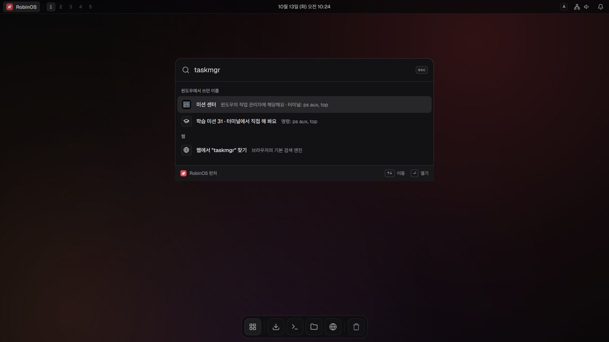
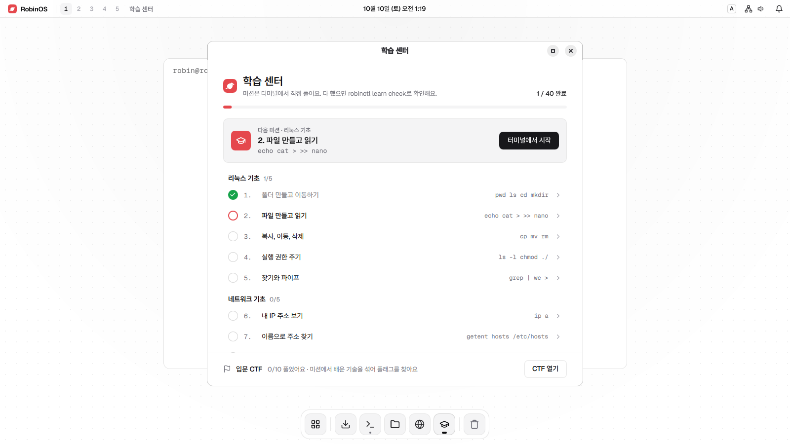
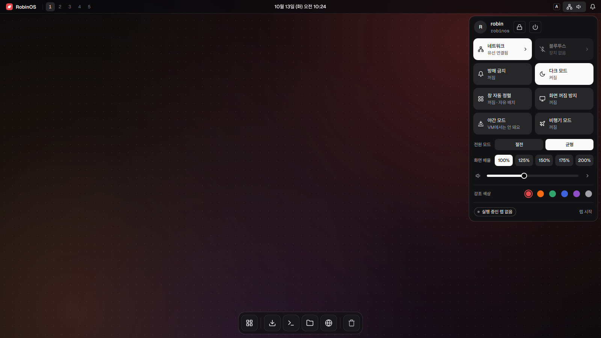
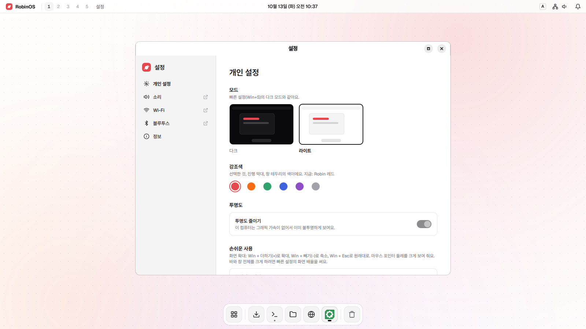

단축키
윈도우에서 쓰던 키가 대부분 돼요.
- WinE파일
- AltTab창 전환
- WinShiftS화면 캡처
- WinV클립보드 기록
- CtrlShiftEsc작업 관리자
윈도우에서 쓰던 단축키와 이름이 그대로 통해요. 터미널에 윈도우 명령을 치면 리눅스 명령을 알려 줘요. 업데이트하다 망가지면 부팅 메뉴에서 되돌리면 돼요.

Win+E로 파일을 열고 Alt+Tab으로 창을 바꿔요. 런처에서 "제어판"이나 "작업 관리자"를 찾아도 알맞은 앱이 나와요.
윈도우에서 쓰던 키가 대부분 돼요.
"메모장"을 찾으면 텍스트 편집기가, "작업 관리자"를 찾으면 미션 센터가 열려요. 리눅스에서는 터미널로 어떻게 하는지도 함께 보여 줘요.
윈도우 프로그램은 리눅스에서 바로 돌아가지 않아요. 파일은 실행하지 않고, 대신 쓸 리눅스 앱이나 앱 스토어의 리눅스판을 알려 줘요.
ps aux, topls, cdip ajournalctlsystemctl/etc, ~/.configipconfig를 치면 ip a를 알려 주고, 그 명령을 연습할 미션 번호까지 붙여 줘요.
robin@robinos ~ > ipconfig ipconfig 명령은 윈도우용이에요. 리눅스에서는 ip a IP 주소와 네트워크 장치를 보여 줘요 직접 해 보기: 학습 미션 6 → robinctl learn show 6
폴더 만들기부터 프로세스, 서비스, 네트워크까지 실제 터미널에서 풀어요. 다 풀었는지는 robinctl이 확인해요. 연습은 모두 내 컴퓨터 안에서만 해요.

문제가 생기면 업데이트 전 상태로 켜서 되돌리면 돼요. 스냅샷은 저절로 찍혀요.
설치나 업데이트를 할 때마다 그 직전 상태를 남겨요.
켜지지 않거나 이상하면 부팅 메뉴에서 이전 스냅샷으로 켜요.
켜진 뒤 알림에서 이 단추를 누르면 그 상태로 계속 써요.
스냅샷은 시스템만 되돌려요. 사진과 문서는 백업 앱으로 USB 디스크에 따로 남겨요.
켜자마자 한글을 쓸 수 있고, 메뉴와 안내도 모두 한국어예요. 설치하면 매일 쓰는 앱도 들어 있어요.
첫 부팅부터 한/영 키로 바로 써요.
Flathub의 앱을 눌러서 설치해요.
LibreOffice로 워드, 엑셀, 파워포인트 파일을 열어요.
요즘 기기는 대부분 드라이버 없이 바로 돼요.
밖에서 들어오는 연결은 처음부터 막아 둬요.
개인 파일을 USB 디스크에 남기고 되살려요.
Win+Alt+R로 시작하고 한 번 더 누르면 멈춰요.
돋보기, 큰 글씨, 고대비, 움직임 줄이기.


USB로 켜면 지금 쓰는 컴퓨터를 건드리지 않고 그대로 써 볼 수 있어요.
GitHub 릴리스에서 받아요. 체크섬과 서명으로 받은 파일이 맞는지 확인할 수 있어요.
Rufus나 Ventoy로 USB에 담아요. USB가 없으면 윈도우 디스크에 빈 파티션을 만들어 켤 수도 있어요.
라이브 화면에서 둘러보고, 마음에 들면 독의 "RobinOS 설치"를 눌러요. 윈도우 옆에도 설치할 수 있어요.
필요한 것: UEFI로 켜는 PC · 보안 부팅 끄기 · 디스크 40GB 이상